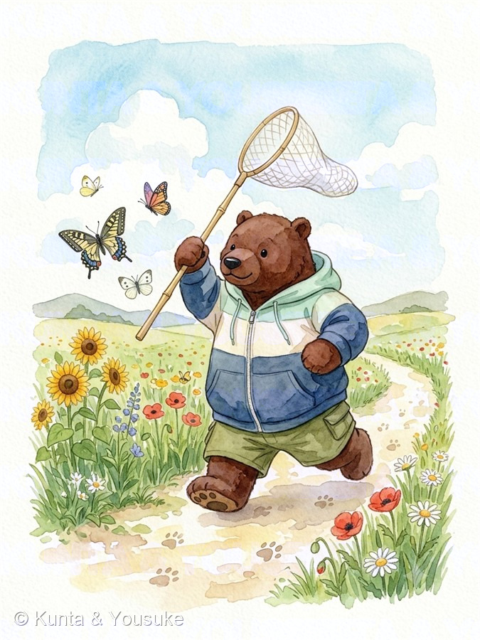
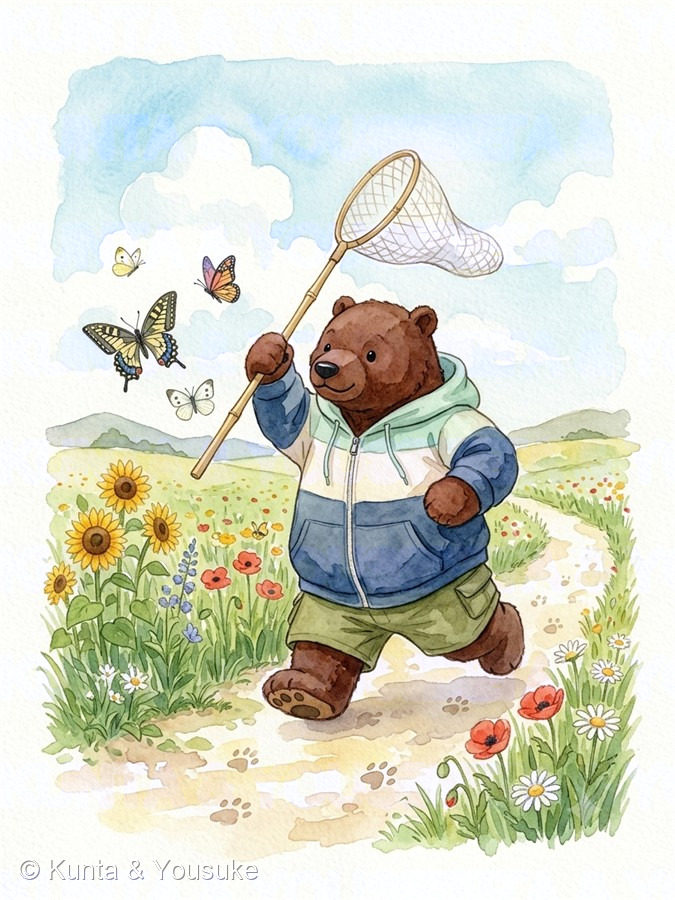

Field Notes · 二人だけの図鑑
植物図鑑



← あたらしい順。よこにスクロールすると、出会った日までさかのぼるよ →
さいきん、図鑑にきた草花
さいきん、新しい話がふえた子
もう図鑑にいる子に、あとから分かったことを書き足したよ。アーカイブの「更新順」で、ぜんぶ見られる。
Field Notes · 二人だけの図鑑


← あたらしい順。よこにスクロールすると、出会った日までさかのぼるよ →
もう図鑑にいる子に、あとから分かったことを書き足したよ。アーカイブの「更新順」で、ぜんぶ見られる。